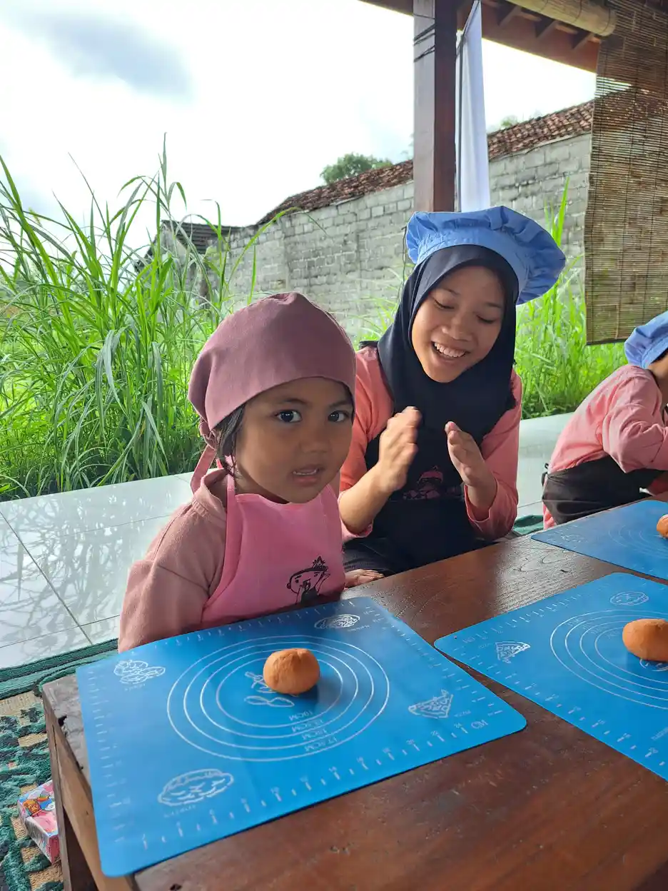
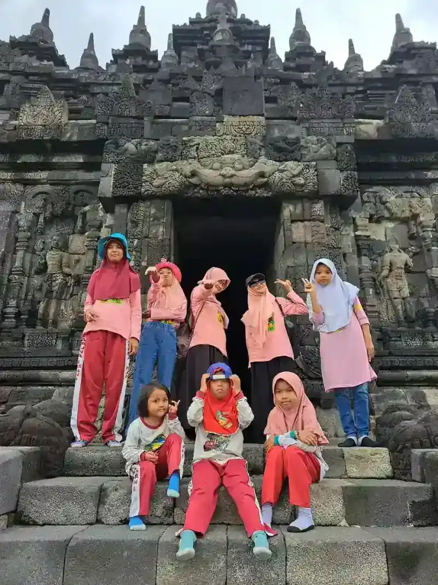
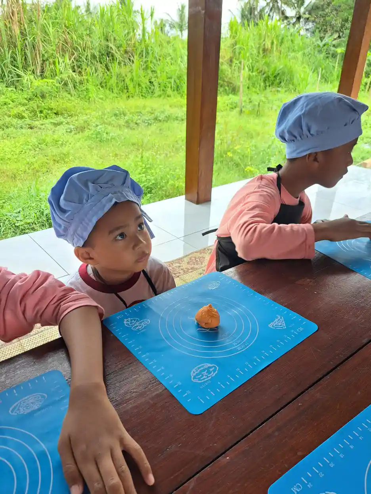

Motorik kasar adalah kemampuan gerakan tubuh yang melibatkan otot-otot besar, seperti otot kaki, lengan, punggung, dan perut. Kemampuan ini menjadi fondasi penting bagi tumbuh kembang anak karena memengaruhi hampir seluruh aspek kehidupan sehari-hari, mulai dari berjalan, berlari, bermain, hingga menjaga keseimbangan tubuh. Tanpa perkembangan motorik kasar yang optimal, anak akan kesulitan berpartisipasi dalam berbagai aktivitas fisik dan sosial bersama teman-temannya.
Di Yayasan Ukhuwah Kaffah Amanatullah (YUKA), kami memahami betul bahwa motorik kasar bukan sekadar kemampuan fisik semata. Kemampuan ini berkaitan erat dengan rasa percaya diri anak, kemampuan bersosialisasi, dan kesiapan belajar di sekolah. Melalui Sekolah Inklusi Taruna Imani di Sleman, Yogyakarta, kami mendampingi berbagai anak berkebutuhan khusus (ABK) untuk mengembangkan kemampuan motorik kasar mereka secara bertahap dan menyenangkan.
Artikel ini akan membahas secara mendalam tentang apa itu motorik kasar, contoh-contoh gerakannya, tahapan perkembangan dari usia 0 hingga 6 tahun, perbedaan dengan motorik halus, serta berbagai permainan dan aktivitas stimulasi yang bisa dilakukan di rumah maupun di sekolah. Panduan ini disusun berdasarkan literatur ilmiah dan pengalaman nyata kami mendampingi anak-anak di YUKA.
Daftar Isi
- Apa Itu Motorik Kasar?
- Contoh Gerakan Motorik Kasar
- Tahapan Perkembangan Motorik Kasar Anak (0-6 Tahun)
- Perbedaan Motorik Kasar dan Motorik Halus
- Permainan dan Aktivitas Stimulasi Motorik Kasar
- Gangguan Motorik Kasar pada Anak Berkebutuhan Khusus
- Pendekatan Stimulasi Motorik Kasar di YUKA
- FAQ Seputar Motorik Kasar
Apa Itu Motorik Kasar?
Secara sederhana, motorik kasar adalah kemampuan mengontrol gerakan tubuh yang melibatkan otot-otot besar. Otot-otot besar ini meliputi otot pada lengan, kaki, punggung, perut, dan bahu. Berbeda dengan motorik halus yang berfokus pada otot-otot kecil di tangan dan jari, motorik kasar berkaitan dengan gerakan-gerakan berskala besar yang membutuhkan kekuatan, keseimbangan, dan koordinasi seluruh tubuh.
Menurut para ahli perkembangan anak, motorik kasar mencakup beberapa komponen utama yang saling berkaitan:
- Keseimbangan (balance): Kemampuan mempertahankan posisi tubuh dalam keadaan diam (keseimbangan statis) maupun saat bergerak (keseimbangan dinamis). Contohnya berdiri dengan satu kaki, berjalan di atas balok keseimbangan, atau berputar tanpa terjatuh.
- Koordinasi tubuh (body coordination): Kemampuan menggerakkan beberapa bagian tubuh secara bersamaan dan terkoordinasi. Contohnya berlari sambil memantulkan bola, memanjat tangga, atau melakukan gerakan senam.
- Kekuatan otot (muscle strength): Kemampuan otot untuk menghasilkan tenaga saat melakukan gerakan seperti mengangkat benda, mendorong, menarik, atau melompat.
- Kelincahan (agility): Kemampuan mengubah arah dan posisi tubuh dengan cepat dan tepat, misalnya saat bermain kejar-kejaran, menghindar, atau berpindah arah saat berlari.
- Kecepatan reaksi (reaction speed): Kemampuan merespons rangsangan dengan gerakan tubuh yang cepat dan tepat, seperti menangkap bola yang dilemparkan atau menghindar dari benda yang bergerak.
Motorik kasar merupakan kemampuan pertama yang berkembang pada bayi, jauh sebelum motorik halus. Bayi belajar mengangkat kepala, berguling, duduk, merangkak, dan akhirnya berjalan sebelum mereka mampu memegang benda kecil atau menulis. Oleh karena itu, motorik kasar sering disebut sebagai fondasi bagi seluruh perkembangan motorik anak.
Perkembangan motorik kasar yang baik juga berpengaruh terhadap aspek-aspek lain dalam kehidupan anak. Anak yang aktif bergerak cenderung memiliki konsentrasi yang lebih baik di kelas, tidur lebih nyenyak, memiliki nafsu makan yang sehat, serta lebih percaya diri dalam bersosialisasi dengan teman sebayanya. Sebaliknya, anak yang mengalami keterlambatan motorik kasar mungkin merasa minder, menghindari aktivitas fisik, dan kesulitan dalam pergaulan sosial.
Tahukah Anda?
Penelitian dari American Academy of Pediatrics menunjukkan bahwa anak usia prasekolah membutuhkan setidaknya 60 menit aktivitas fisik terstruktur dan 60 menit bermain bebas setiap harinya untuk mendukung perkembangan motorik kasar yang optimal. Aktivitas fisik yang cukup juga terbukti meningkatkan kemampuan kognitif dan kesiapan belajar anak di sekolah.
Contoh Gerakan Motorik Kasar
Gerakan motorik kasar sangat beragam dan bisa ditemukan dalam hampir setiap aktivitas fisik yang dilakukan anak sehari-hari. Memahami contoh-contoh gerakan ini akan membantu orang tua dan pendidik merancang kegiatan stimulasi yang tepat. Berikut adalah berbagai contoh motorik kasar yang dikelompokkan berdasarkan jenisnya:
Gerakan Lokomotor (Berpindah Tempat)
Gerakan lokomotor adalah gerakan yang menyebabkan tubuh berpindah dari satu tempat ke tempat lain. Jenis gerakan ini merupakan fondasi dari banyak aktivitas fisik dan olahraga.
- Berjalan: Gerakan dasar yang mulai dikuasai anak sekitar usia 12 bulan. Berjalan melatih keseimbangan, koordinasi kaki, dan kekuatan otot tungkai.
- Berlari: Perkembangan lebih lanjut dari berjalan yang membutuhkan kekuatan dan koordinasi lebih besar. Anak mulai bisa berlari sekitar usia 18-24 bulan.
- Melompat: Gerakan yang membutuhkan kekuatan otot kaki untuk mendorong tubuh ke atas atau ke depan. Melompat dengan dua kaki biasanya dikuasai usia 2-3 tahun.
- Merangkak: Gerakan fundamental yang melatih koordinasi tangan-kaki dan kekuatan otot lengan serta kaki secara bersamaan.
- Memanjat: Gerakan naik ke tempat yang lebih tinggi menggunakan tangan dan kaki, misalnya memanjat tangga bermain atau pohon rendah.
- Meluncur dan berguling: Gerakan yang melatih kesadaran spasial dan keberanian anak dalam menggerakkan seluruh tubuhnya.
Gerakan Non-Lokomotor (Gerakan di Tempat)
Gerakan non-lokomotor adalah gerakan yang dilakukan tanpa berpindah tempat. Gerakan ini melatih keseimbangan, kekuatan, dan fleksibilitas tubuh anak.
- Meregangkan tubuh: Gerakan menjulurkan lengan, kaki, atau badan untuk melatih fleksibilitas otot dan sendi.
- Membungkuk dan menekuk: Gerakan menundukkan badan atau menekuk lutut yang melatih kelenturan dan kekuatan otot punggung serta kaki.
- Berputar dan memutar badan: Gerakan rotasi tubuh yang melatih keseimbangan dan kesadaran posisi tubuh (propriosepsi).
- Mengayun lengan dan kaki: Gerakan pendulum yang melatih koordinasi dan kekuatan otot bahu serta pinggul.
- Berdiri dengan satu kaki: Gerakan keseimbangan statis yang membutuhkan konsentrasi dan kontrol otot yang baik.

Gerakan Manipulatif (Mengontrol Benda)
Gerakan manipulatif dalam konteks motorik kasar adalah gerakan yang melibatkan pengendalian benda menggunakan otot-otot besar tubuh, bukan gerakan halus jari-jari. Gerakan ini sering dijumpai dalam berbagai permainan dan olahraga.
- Melempar bola: Gerakan mengayunkan lengan untuk melemparkan bola ke arah sasaran. Membutuhkan koordinasi mata-tangan dan kekuatan otot lengan.
- Menangkap bola: Kemampuan memperkirakan arah dan kecepatan bola yang datang, lalu menangkapnya dengan kedua tangan.
- Menendang bola: Gerakan mengayunkan kaki untuk menendang bola, melatih kekuatan otot kaki dan keseimbangan saat berdiri dengan satu kaki.
- Memukul bola: Menggunakan tangan atau alat (seperti raket atau tongkat) untuk memukul bola, membutuhkan koordinasi mata-tangan dan timing yang tepat.
- Memantulkan bola: Gerakan mendorong bola ke lantai secara berulang, melatih ritme dan koordinasi tangan.
Penting untuk diingat bahwa setiap anak mengembangkan kemampuan gerakan-gerakan ini pada waktu yang berbeda. Beberapa anak mungkin lebih cepat menguasai gerakan lokomotor tetapi membutuhkan waktu lebih lama untuk gerakan manipulatif, dan sebaliknya. Yang terpenting adalah memberikan kesempatan dan lingkungan yang mendukung agar anak bisa berlatih secara konsisten.
Tahapan Perkembangan Motorik Kasar Anak (0-6 Tahun)
Perkembangan motorik kasar mengikuti pola yang relatif teratur, dimulai dari gerakan refleks pada bayi baru lahir hingga gerakan yang kompleks dan terkoordinasi pada anak usia sekolah. Memahami tahapan ini akan membantu orang tua dan pendidik memantau perkembangan anak serta mendeteksi dini jika ada keterlambatan yang memerlukan perhatian khusus.
Usia 0-3 Bulan: Gerakan Refleks dan Kontrol Kepala
Pada periode awal kehidupan, bayi masih didominasi oleh gerakan refleks. Namun, secara bertahap bayi mulai mengembangkan kontrol terhadap gerakan-gerakan dasar:
- Menggerakkan kepala ke kanan dan kiri saat tengkurap
- Mulai mengangkat kepala sebentar saat ditengkurapkan
- Menggerakkan lengan dan kaki secara acak
- Bereaksi terhadap suara atau cahaya dengan gerakan tubuh
Usia 3-6 Bulan: Mengangkat Kepala dan Berguling
Di periode ini, bayi menunjukkan peningkatan yang signifikan dalam kontrol otot-otot besar. Kekuatan otot leher dan punggung semakin berkembang.
- Mengangkat kepala dengan stabil saat tengkurap
- Mendorong tubuh ke atas dengan kedua lengan saat tengkurap
- Mulai berguling dari posisi tengkurap ke telentang
- Duduk dengan bantuan atau topangan
- Menendang-nendangkan kaki saat telentang
Usia 6-9 Bulan: Duduk dan Merangkak
Tahap ini merupakan periode penting di mana bayi mulai mengeksplorasi lingkungannya secara lebih aktif. Kemampuan duduk dan merangkak membuka dunia baru bagi bayi.
- Duduk tanpa bantuan dengan keseimbangan yang stabil
- Mulai merangkak atau bergerak maju dengan cara sendiri
- Berpindah dari posisi duduk ke merangkak dan sebaliknya
- Menarik tubuh untuk berdiri dengan berpegangan pada furnitur
- Berguling ke kedua arah dengan lancar
Usia 9-12 Bulan: Berdiri dan Langkah Pertama
Periode ini penuh dengan pencapaian yang menggembirakan. Bayi mulai mempersiapkan diri untuk berjalan, salah satu tonggak motorik kasar yang paling dinantikan orang tua.
- Berdiri sendiri dengan berpegangan pada furnitur
- Berjalan merambat (cruising) sepanjang furnitur
- Berdiri sendiri tanpa pegangan selama beberapa detik
- Mengambil langkah pertama (beberapa anak mulai berjalan)
- Duduk dari posisi berdiri dengan terkontrol
Usia 1-2 Tahun: Berjalan dan Eksplorasi Aktif
Setelah menguasai kemampuan berjalan, anak memasuki fase eksplorasi yang sangat aktif. Dunia menjadi tempat bermain yang luas dan menarik untuk dijelajahi.
- Berjalan sendiri dengan semakin stabil dan percaya diri
- Mulai berlari meskipun masih sering jatuh
- Naik turun tangga dengan bantuan (merangkak atau berpegangan)
- Menendang bola ke depan
- Berjongkok untuk mengambil benda di lantai
- Mendorong dan menarik mainan beroda
- Melempar bola ke arah tertentu (meskipun belum akurat)
Usia 2-3 Tahun: Berlari, Melompat, dan Memanjat
Pada usia ini, kemampuan motorik kasar anak berkembang pesat. Anak menjadi semakin aktif dan berani mencoba gerakan-gerakan baru yang lebih menantang.
- Berlari dengan lebih stabil dan bisa berhenti mendadak
- Melompat dengan kedua kaki secara bersamaan
- Memanjat peralatan bermain di taman
- Naik turun tangga dengan berpegangan (satu kaki per anak tangga)
- Berdiri dengan satu kaki selama beberapa detik
- Mengayuh sepeda roda tiga
- Menangkap bola besar dengan kedua tangan

Usia 3-4 Tahun: Koordinasi Semakin Matang
Anak usia prasekolah menunjukkan peningkatan yang signifikan dalam koordinasi dan keseimbangan tubuh. Gerakan-gerakan mereka menjadi lebih halus dan terkontrol.
- Berlari dengan lancar, bisa berbelok dan menghindar
- Melompat ke depan dengan jarak yang lebih jauh
- Berdiri dengan satu kaki selama 5-10 detik
- Naik turun tangga dengan kaki bergantian
- Menangkap bola yang dilempar dari jarak dekat
- Mengayuh dan mengarahkan sepeda roda tiga dengan baik
- Melakukan gerakan senam sederhana
Usia 4-6 Tahun: Keterampilan Lanjutan
Menjelang usia sekolah, kemampuan motorik kasar anak sudah cukup matang untuk mendukung berbagai kegiatan olahraga dan aktivitas fisik yang lebih kompleks.
- Berlari dengan cepat dan bisa mengubah arah secara tiba-tiba
- Melompat dengan satu kaki (hop) secara bergantian
- Melompat tali
- Menangkap bola kecil dengan satu atau dua tangan
- Melempar bola dengan akurasi yang lebih baik
- Bersepeda roda dua (dengan atau tanpa roda bantu)
- Berenang (dengan latihan)
- Melakukan gerakan senam yang lebih kompleks
- Bermain permainan olahraga sederhana seperti sepak bola atau bulu tangkis
"Setiap anak berkembang dengan kecepatannya sendiri. Yang terpenting bukanlah secepat apa anak mencapai suatu tonggak perkembangan, melainkan apakah mereka terus menunjukkan kemajuan secara konsisten dari waktu ke waktu."
Perbedaan Motorik Kasar dan Motorik Halus
Banyak orang tua yang masih bingung membedakan antara motorik kasar dan motorik halus. Meskipun keduanya sama-sama penting untuk tumbuh kembang anak, ada perbedaan mendasar antara kedua jenis kemampuan motorik ini. Memahami perbedaannya akan membantu orang tua dan pendidik merancang program stimulasi yang seimbang dan menyeluruh.
| Aspek | Motorik Kasar | Motorik Halus |
|---|---|---|
| Otot yang terlibat | Otot-otot besar (kaki, lengan, punggung, perut, bahu) | Otot-otot kecil (jari, tangan, pergelangan tangan) |
| Jenis gerakan | Gerakan berskala besar dan kuat | Gerakan presisi dan detail |
| Contoh aktivitas | Berlari, melompat, memanjat, menendang bola | Menulis, menggunting, mengancingkan baju, meronce |
| Waktu perkembangan | Berkembang lebih awal (sejak lahir) | Berkembang setelah motorik kasar mulai matang |
| Komponen utama | Keseimbangan, kekuatan, koordinasi tubuh | Ketangkasan jari, koordinasi mata-tangan |
| Kebutuhan ruang | Membutuhkan ruang yang luas | Bisa dilakukan di ruang terbatas |
| Dampak keterlambatan | Kesulitan dalam olahraga, bermain, dan mobilitas | Kesulitan dalam menulis, kemandirian, dan tugas akademik |
Meskipun berbeda, motorik kasar dan motorik halus saling berkaitan dan saling mendukung. Motorik kasar yang baik menjadi fondasi bagi perkembangan motorik halus. Misalnya, anak perlu memiliki kekuatan dan stabilitas otot bahu (motorik kasar) yang memadai sebelum bisa mengontrol gerakan tangan dan jari (motorik halus) dengan baik saat menulis. Begitu pula, anak yang memiliki keseimbangan tubuh yang baik (motorik kasar) akan lebih mudah duduk dengan posisi yang stabil saat mengerjakan tugas-tugas motorik halus di meja.
Oleh karena itu, stimulasi untuk kedua jenis motorik ini sebaiknya dilakukan secara bersamaan dan seimbang. Jangan hanya fokus pada salah satu saja. Anak yang aktif bermain di luar ruangan (melatih motorik kasar) juga perlu diberikan kegiatan yang melatih motorik halus seperti menggambar, mewarnai, dan bermain plastisin. Untuk informasi lebih lengkap tentang stimulasi motorik halus, Anda bisa membaca artikel kami tentang motorik halus pada anak.
Penting untuk Diingat
Keterlambatan pada salah satu jenis motorik bisa memengaruhi perkembangan jenis motorik lainnya. Anak yang mengalami keterlambatan motorik kasar, misalnya, mungkin juga mengalami kesulitan dalam motorik halus karena fondasi otot besarnya belum cukup kuat. Jika Anda khawatir tentang perkembangan motorik anak, konsultasikan dengan ahli terapi okupasi untuk mendapatkan penilaian yang komprehensif.
Permainan dan Aktivitas Stimulasi Motorik Kasar
Stimulasi motorik kasar yang paling efektif adalah melalui permainan dan aktivitas fisik yang menyenangkan. Anak-anak belajar paling baik saat mereka merasa senang dan tidak merasa dipaksa. Berikut adalah berbagai permainan motorik kasar yang bisa dilakukan di rumah, di taman, maupun di sekolah:
1. Bermain Bola
Bermain bola adalah salah satu aktivitas paling serbaguna untuk melatih motorik kasar anak. Hanya dengan satu bola, anak bisa melatih berbagai kemampuan: melempar melatih kekuatan lengan dan koordinasi mata-tangan, menangkap melatih reaksi dan keseimbangan, menendang melatih kekuatan kaki dan keseimbangan saat berdiri dengan satu kaki, serta memantulkan bola melatih ritme dan koordinasi.
Sesuaikan ukuran bola dengan usia dan kemampuan anak. Untuk anak usia 1-2 tahun, gunakan bola besar dan empuk. Untuk anak usia 3-4 tahun, bola berukuran sedang sudah bisa digunakan. Anak usia 5-6 tahun bisa mulai bermain dengan bola berukuran standar untuk berbagai olahraga.
2. Berlari dan Bermain Kejar-Kejaran
Permainan kejar-kejaran atau petak umpet adalah cara alami dan menyenangkan untuk melatih kemampuan berlari, kelincahan, dan stamina anak. Permainan ini juga melatih kemampuan sosial karena melibatkan interaksi dengan teman sebaya. Variasi permainan kejar-kejaran seperti "polisi dan pencuri" atau "ular naga" menambah keseruan sekaligus melatih kemampuan berpikir strategis anak.
3. Memanjat dan Bermain di Playground
Peralatan bermain di taman (playground) dirancang khusus untuk melatih motorik kasar anak. Memanjat tangga bermain melatih kekuatan otot lengan dan kaki. Meluncur di seluncuran melatih keberanian dan kesadaran spasial. Berayun di ayunan melatih keseimbangan dan koordinasi tubuh. Bergelantungan di monkey bar melatih kekuatan genggaman dan otot lengan bagian atas.
Pastikan anak bermain di peralatan yang sesuai usianya dan selalu dalam pengawasan orang dewasa. Ajarkan anak tentang keamanan bermain, seperti menunggu giliran, memegang pegangan dengan erat, dan mendarat dengan kedua kaki saat melompat turun.
4. Bersepeda
Bersepeda adalah aktivitas yang sangat baik untuk melatih motorik kasar. Mengayuh pedal melatih kekuatan otot kaki, mengarahkan setang melatih koordinasi tangan, dan menjaga keseimbangan di atas sepeda melatih seluruh otot tubuh secara bersamaan. Untuk anak usia 2-3 tahun, mulailah dengan sepeda roda tiga atau balance bike (sepeda tanpa pedal). Anak usia 4-6 tahun bisa mulai belajar sepeda roda dua dengan roda bantu.
5. Menari dan Senam
Menari mengikuti musik adalah cara yang menyenangkan untuk melatih koordinasi tubuh, keseimbangan, dan ritme. Anda bisa memutar lagu anak-anak yang ceria dan mengajak anak bergerak mengikuti irama. Senam sederhana dengan gerakan seperti melompat, meregangkan tubuh, memutar pinggang, dan mengayunkan lengan juga sangat bermanfaat untuk perkembangan motorik kasar anak.
6. Bermain Air
Aktivitas bermain air, termasuk berenang, memberikan stimulasi motorik kasar yang luar biasa. Air memberikan resistansi alami yang membuat otot-otot bekerja lebih keras, sehingga efektif untuk memperkuat otot-otot besar. Selain itu, bermain air juga memberikan pengalaman sensori integrasi yang kaya bagi anak. Untuk anak yang belum bisa berenang, bermain ciprat-cipratan air, menuangkan air, atau bermain di kolam renang dangkal sudah cukup bermanfaat.
7. Lompat Tali dan Permainan Tradisional
Permainan tradisional Indonesia sangat kaya dengan aktivitas yang melatih motorik kasar. Lompat tali melatih kekuatan kaki dan koordinasi ritme. Engklek (hopscotch) melatih keseimbangan saat melompat dengan satu kaki. Gobak sodor melatih kelincahan dan kecepatan. Petak umpet melatih kemampuan berlari dan bersembunyi. Permainan-permainan ini selain menyenangkan juga membangun keterampilan sosial dan mengenalkan budaya lokal kepada anak.
8. Obstacle Course (Lintasan Rintangan)
Membuat lintasan rintangan sederhana di rumah atau di halaman adalah cara kreatif untuk melatih berbagai aspek motorik kasar sekaligus. Anda bisa menggunakan bantal untuk diloncati, kursi untuk dilewati dengan merangkak, garis di lantai untuk berjalan di atasnya, dan hula hoop untuk dilompati masuk dan keluar. Lintasan rintangan melatih kekuatan, keseimbangan, koordinasi, dan kelincahan anak secara bersamaan.

Tips Stimulasi Motorik Kasar di Rumah
Anda tidak perlu peralatan mahal untuk menstimulasi motorik kasar anak. Ajak anak bermain di halaman rumah, di taman sekitar, atau bahkan di dalam rumah. Letakkan bantal di lantai untuk dijadikan lintasan rintangan, putar musik dan ajak anak menari, atau bermain lempar tangkap bola dari gulungan kaus kaki. Yang terpenting adalah konsistensi dan membuat aktivitas fisik menjadi bagian rutin dari keseharian anak.
Gangguan Motorik Kasar pada Anak Berkebutuhan Khusus
Anak berkebutuhan khusus sering mengalami tantangan yang lebih besar dalam perkembangan motorik kasar. Beberapa kondisi secara langsung memengaruhi kemampuan otot-otot besar dan koordinasi tubuh, sementara kondisi lainnya memengaruhi secara tidak langsung melalui gangguan pada sistem saraf atau kemampuan memproses informasi sensoris. Memahami bagaimana berbagai kondisi memengaruhi motorik kasar akan membantu orang tua dan pendidik merancang program stimulasi yang tepat.
Cerebral Palsy
Cerebral palsy adalah salah satu kondisi yang paling signifikan memengaruhi motorik kasar anak. Gangguan ini disebabkan oleh kerusakan pada otak yang terjadi sebelum, selama, atau segera setelah kelahiran. Anak dengan cerebral palsy mungkin mengalami kekakuan otot (spastisitas), gerakan yang tidak terkontrol (diskinesia), atau gangguan keseimbangan (ataksia). Tingkat keparahannya bervariasi, mulai dari kesulitan ringan dalam berjalan hingga ketidakmampuan total untuk bergerak secara mandiri.
Stimulasi motorik kasar untuk anak dengan cerebral palsy membutuhkan pendekatan yang sangat individual dan biasanya melibatkan tim multidisiplin yang terdiri dari fisioterapis, terapis okupasi, dan dokter spesialis. Program latihan dirancang untuk memaksimalkan fungsi motorik yang ada, mencegah kontraktur otot, dan meningkatkan kemandirian anak semaksimal mungkin.
Down Syndrome
Anak dengan Down syndrome umumnya mengalami hipotonia, yaitu tonus otot yang lebih rendah dari normal. Kondisi ini menyebabkan otot-otot terasa lebih lembek dan kurang bertenaga, sehingga anak membutuhkan waktu lebih lama untuk mencapai tonggak motorik kasar seperti duduk, merangkak, berdiri, dan berjalan. Meskipun demikian, dengan stimulasi yang konsisten dan sabar, sebagian besar anak dengan Down syndrome dapat menguasai keterampilan motorik kasar dasar.
Di YUKA, kami menyaksikan langsung bagaimana anak-anak dengan Down syndrome menunjukkan kemajuan yang luar biasa dalam motorik kasar ketika diberikan dukungan, latihan terstruktur, dan lingkungan yang mendorong mereka untuk aktif bergerak. Keberhasilan mereka selalu menjadi sumber kebahagiaan bagi seluruh tim pendidik dan terapis kami.
Gangguan Spektrum Autisme
Anak dengan gangguan spektrum autisme mungkin mengalami tantangan motorik kasar yang berkaitan dengan koordinasi tubuh, perencanaan gerakan (motor planning), dan pemrosesan sensoris. Beberapa anak autis memiliki cara berjalan yang khas, kesulitan dalam aktivitas yang membutuhkan koordinasi bilateral (seperti bersepeda atau berenang), atau menghindari aktivitas fisik tertentu karena sensitivitas sensoris.
Pendekatan sensori integrasi sering kali efektif untuk membantu anak autis mengatasi tantangan motorik kasar mereka. Terapi ini membantu anak memproses informasi sensoris dengan lebih baik, sehingga mereka dapat merespons lingkungan dan mengontrol gerakan tubuhnya secara lebih efektif.
Gangguan Koordinasi Perkembangan (Developmental Coordination Disorder/DCD)
DCD, yang juga dikenal sebagai dispraksia, adalah gangguan yang secara spesifik memengaruhi kemampuan koordinasi motorik anak. Anak dengan DCD mungkin tampak "canggung" dalam gerakan-gerakannya: sering menabrak benda, kesulitan menangkap bola, sulit belajar naik sepeda, atau mengalami masalah keseimbangan. Kondisi ini tidak disebabkan oleh gangguan intelektual atau penyakit neurologis yang teridentifikasi, tetapi memengaruhi kehidupan sehari-hari anak secara signifikan.
Penting untuk mengenali DCD sejak dini karena tanpa penanganan yang tepat, anak dengan kondisi ini bisa mengalami penurunan rasa percaya diri, menghindari aktivitas fisik, dan mengalami masalah sosial karena kesulitan berpartisipasi dalam permainan bersama teman-temannya.
Kapan Harus Waspada?
Segera konsultasikan ke dokter anak atau ahli tumbuh kembang jika anak Anda menunjukkan tanda-tanda berikut: belum bisa duduk tanpa bantuan di usia 9 bulan, belum bisa berdiri berpegangan di usia 12 bulan, belum bisa berjalan di usia 18 bulan, sering jatuh dibandingkan anak seusianya, menghindari aktivitas fisik, atau terlihat sangat kaku atau sangat lemas saat bergerak. Deteksi dini dan intervensi yang tepat dapat membuat perbedaan besar dalam perkembangan motorik kasar anak. Untuk memahami lebih lanjut tentang pendidikan khusus, silakan baca artikel terkait di situs kami.
Pendekatan Stimulasi Motorik Kasar di YUKA
Di YUKA, kami memandang stimulasi motorik kasar sebagai bagian yang tidak terpisahkan dari pendidikan holistik anak. Kami percaya bahwa setiap anak, terlepas dari kondisi dan keterbatasannya, memiliki potensi untuk berkembang jika diberikan dukungan yang tepat dan lingkungan yang positif. Berikut adalah program-program yang kami selenggarakan untuk mendukung perkembangan motorik kasar anak-anak di YUKA:
Wisata Edukasi dan Kegiatan Outdoor
Salah satu program unggulan YUKA adalah wisata edukasi yang secara rutin kami selenggarakan ke berbagai tempat menarik. Anak-anak diajak mengunjungi candi, kebun binatang, taman bermain, dan lokasi wisata alam lainnya. Selama kegiatan wisata, anak-anak secara alami melatih motorik kasar mereka melalui berjalan di berbagai medan, memanjat tangga candi, berlari di halaman terbuka, dan berinteraksi dengan lingkungan alam. Kegiatan ini tidak hanya bermanfaat untuk motorik kasar, tetapi juga memperkaya pengalaman sensoris, pengetahuan, dan keterampilan sosial anak.
Cooking Class Outdoor
Program cooking class outdoor di YUKA bukan sekadar kegiatan memasak biasa. Dalam kegiatan ini, anak-anak melakukan berbagai aktivitas fisik yang melatih motorik kasar: berdiri dalam waktu yang cukup lama, mengaduk adonan dengan gerakan lengan yang kuat, mengangkat dan memindahkan peralatan dapur, serta bergerak dari satu area ke area lainnya. Cooking class outdoor juga melatih motorik halus anak secara bersamaan, menjadikannya program stimulasi yang sangat komprehensif.
Olahraga dan Permainan Terstruktur
Tim pendidik YUKA merancang program olahraga dan permainan terstruktur yang disesuaikan dengan kemampuan dan kebutuhan setiap anak. Program ini mencakup senam pagi, permainan bola, lari estafet, dan berbagai permainan tradisional yang melatih motorik kasar. Setiap kegiatan dirancang dengan tingkat kesulitan yang bervariasi sehingga semua anak, termasuk anak berkebutuhan khusus, bisa berpartisipasi dan merasakan keberhasilan.
Terapi Sensori-Motorik
Untuk anak-anak yang membutuhkan penanganan lebih intensif, YUKA menyediakan program terapi sensori-motorik yang dipandu oleh terapis profesional. Program ini mengintegrasikan pendekatan sensori integrasi dengan latihan motorik kasar yang dirancang secara individual berdasarkan hasil asesmen setiap anak. Terapi ini bertujuan untuk memperbaiki koordinasi tubuh, meningkatkan keseimbangan, memperkuat otot-otot besar, dan membantu anak memproses informasi sensoris dengan lebih efektif.
Kolaborasi dengan Orang Tua
Kami di YUKA menyadari bahwa stimulasi motorik kasar tidak cukup hanya dilakukan di sekolah. Oleh karena itu, kami secara aktif melibatkan orang tua dalam program stimulasi anak. Kami memberikan panduan aktivitas fisik yang bisa dilakukan di rumah, mengadakan sesi konsultasi dengan terapis, dan menyelenggarakan workshop bagi orang tua tentang cara mendukung perkembangan motorik kasar anak di lingkungan rumah.
Bergabunglah dengan YUKA
Jika Anda memiliki anak yang membutuhkan stimulasi motorik kasar, baik anak berkebutuhan khusus maupun anak pada umumnya, kami mengundang Anda untuk mengenal lebih jauh program-program di YUKA. Tim kami siap berdiskusi tentang kebutuhan spesifik anak Anda dan bagaimana kami bisa membantu. Hubungi kami di +62 812-2991-2332 atau kunjungi Sekolah Inklusi Taruna Imani di Sleman, Yogyakarta.
FAQ Seputar Motorik Kasar
1. Apa yang dimaksud dengan motorik kasar?
Motorik kasar adalah kemampuan gerakan tubuh yang melibatkan otot-otot besar seperti otot kaki, lengan, punggung, dan perut. Kemampuan ini mencakup gerakan-gerakan seperti berjalan, berlari, melompat, melempar bola, memanjat, dan menjaga keseimbangan tubuh. Motorik kasar merupakan fondasi penting bagi perkembangan fisik dan kemandirian anak.
2. Apa saja contoh gerakan motorik kasar pada anak?
Contoh motorik kasar pada anak meliputi: berjalan, berlari, melompat, memanjat, menendang bola, melempar dan menangkap bola, bersepeda, berenang, berguling, merangkak, naik turun tangga, berdiri dengan satu kaki, dan melakukan gerakan senam. Setiap gerakan ini melibatkan otot-otot besar pada tubuh anak dan berkembang secara bertahap sesuai usia.
3. Apa perbedaan motorik kasar dan motorik halus?
Perbedaan motorik kasar dan halus terletak pada otot yang digunakan. Motorik kasar melibatkan otot-otot besar untuk gerakan seperti berlari, melompat, dan memanjat. Sedangkan motorik halus melibatkan otot-otot kecil di tangan dan jari untuk gerakan seperti menulis, menggunting, dan mengancingkan baju. Motorik kasar berkembang lebih dulu dibandingkan motorik halus, dan keduanya saling melengkapi.
4. Bagaimana cara menstimulasi motorik kasar anak di rumah?
Cara menstimulasi motorik kasar anak di rumah antara lain: mengajak anak bermain di luar rumah (berlari, memanjat, bermain bola), bersepeda, bermain lompat tali, menari mengikuti musik, bermain keseimbangan di atas garis atau papan, bermain lempar tangkap bola, serta melakukan senam sederhana bersama. Pastikan aktivitas dilakukan secara rutin, minimal 60 menit per hari, dan dibuat menyenangkan agar anak termotivasi.
5. Apakah YUKA memiliki program stimulasi motorik kasar untuk anak berkebutuhan khusus?
Ya, YUKA menyediakan program stimulasi motorik kasar melalui Sekolah Inklusi Taruna Imani di Sleman, Yogyakarta. Program ini mencakup kegiatan outdoor seperti wisata edukasi, cooking class outdoor, olahraga terstruktur, permainan sensori-motorik, serta terapi yang dirancang untuk meningkatkan kemampuan motorik kasar anak berkebutuhan khusus. Hubungi kami di +62 812-2991-2332 untuk informasi lebih lanjut.
Baca Juga Artikel Terkait:
Sumber Resmi & Referensi Authoritative
Konten artikel ini diperkuat dengan referensi dari lembaga resmi pemerintah dan organisasi kesehatan internasional:
- Kemenkes Keslan: Sensori Integrasi pada Perkembangan Anak keslan.kemkes.go.id
- Kemenkes Keslan: Apa Itu ADHD keslan.kemkes.go.id
- WHO Fact Sheet: Autism Spectrum Disorders who.int
- UU No. 8 Tahun 2016 tentang Penyandang Disabilitas peraturan.bpk.go.id
- Kemenkes Ayo Sehat: Kumpulan Link Penting untuk Anak Disabilitas ayosehat.kemkes.go.id
Disclaimer Medis & Pendidikan: Artikel ini bersifat edukasi umum dan bukan pengganti konsultasi profesional. Untuk diagnosis, asesmen, atau penanganan anak berkebutuhan khusus, silakan konsultasikan langsung dengan dokter anak, psikiater anak, psikolog perkembangan, terapis okupasi, atau tenaga ahli pendidikan khusus yang berlisensi. YUKA Indonesia mendukung pendekatan multidisiplin dan tidak menggantikan peran tenaga medis maupun terapis profesional.